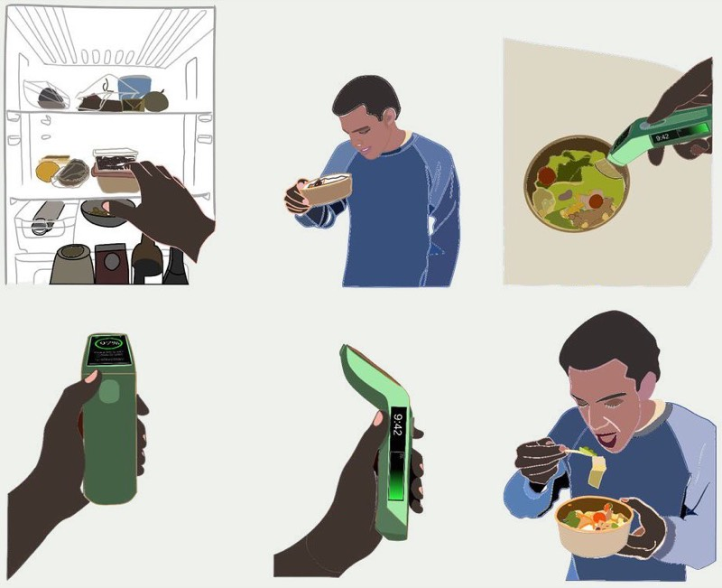
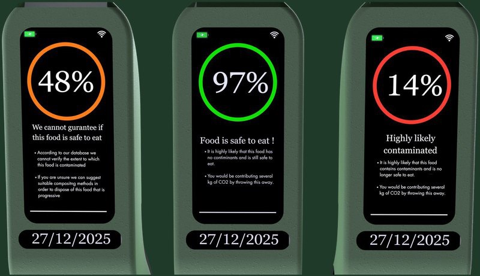
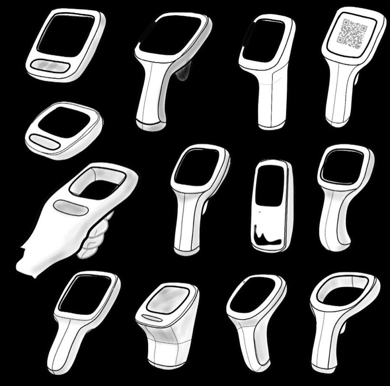
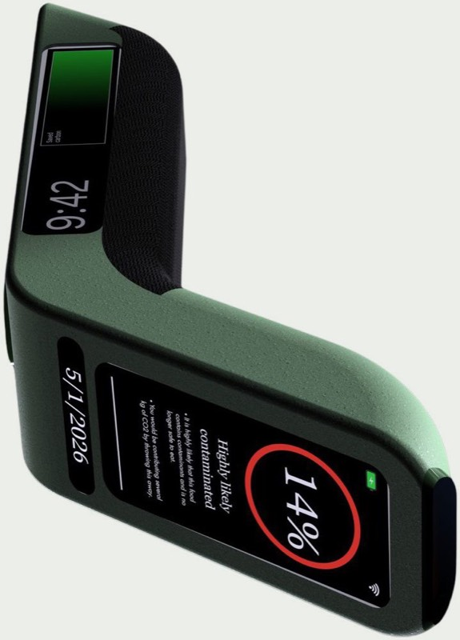

Fresha
A handheld scanner that reads spoilage gases and bacteria to show, in seconds, whether food is still safe to eat. A companion app turns every meal saved into CO₂ saved, so cutting waste feels rewarding rather than a chore.
Eat confidently. Waste less.

Is it still safe to eat?
People throw food away because they can’t tell whether it has gone off, not because it has. Use-by dates are cautious and the sniff test is guesswork. Fresha swaps the guessing for a clear reading, and shows what binning it would have cost the planet.
- ⅓
- of all food produced globally is lost or wasted
- 9.5Mt
- of food wasted in the UK every year
- £14bn
- yearly value of food thrown away by UK households
Sources: FAO (global food loss and waste); WRAP (UK food waste estimates).

Three readings, one app.
The device screen answers with colour first, numbers second. The app adds the why: what binning it would cost.

- 48%
- Can’t guarantee it. Use your judgement.
- 97%
- Safe to eat. Points earned.
- 14%
- Highly likely contaminated.
Every meal saved becomes CO₂ saved.
- Home
- One action: scan.
- Result
- Score plus that item’s CO₂ impact.
- Rewards
- CO₂ saved unlocks food or a tree.

One hand, one glance.
A one-handed body with a fold-out stand, a clear READY state, and a sensor head that sits close to the food without touching it. The result reads at a glance, so the decision takes a second, not a sniff test.

